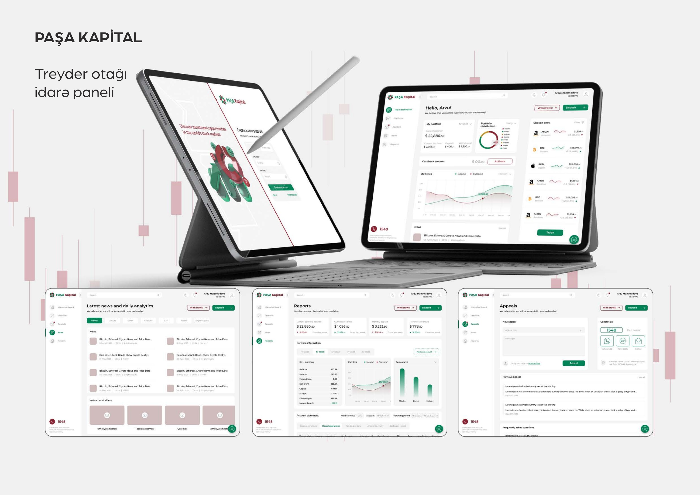
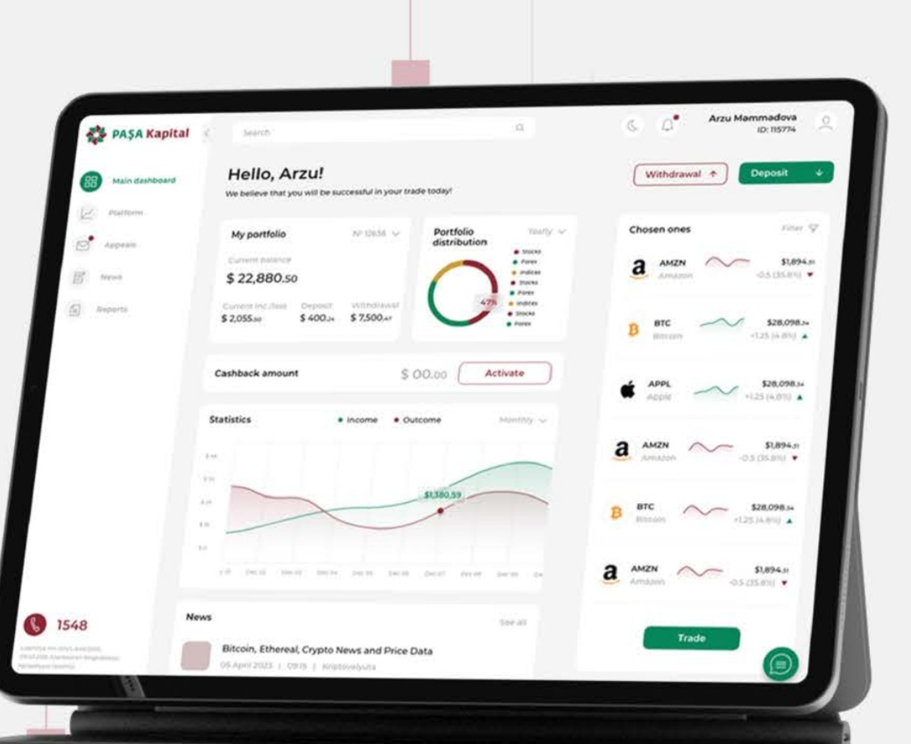
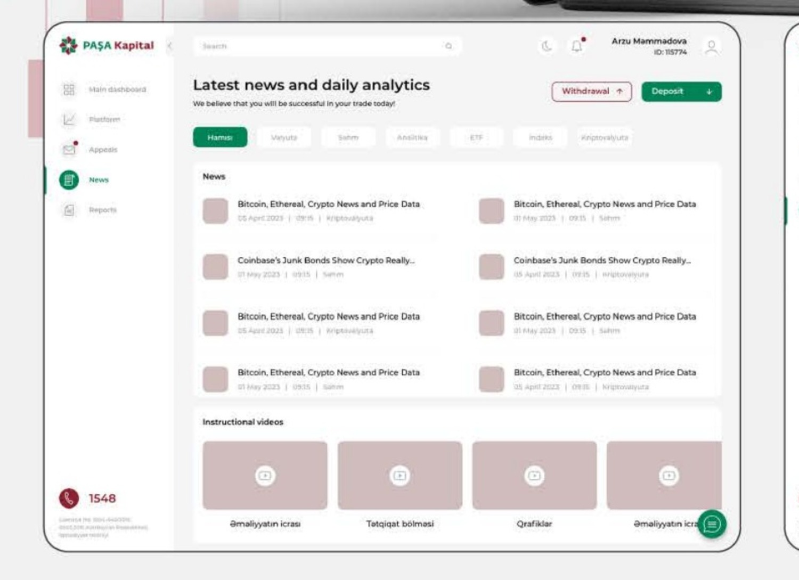
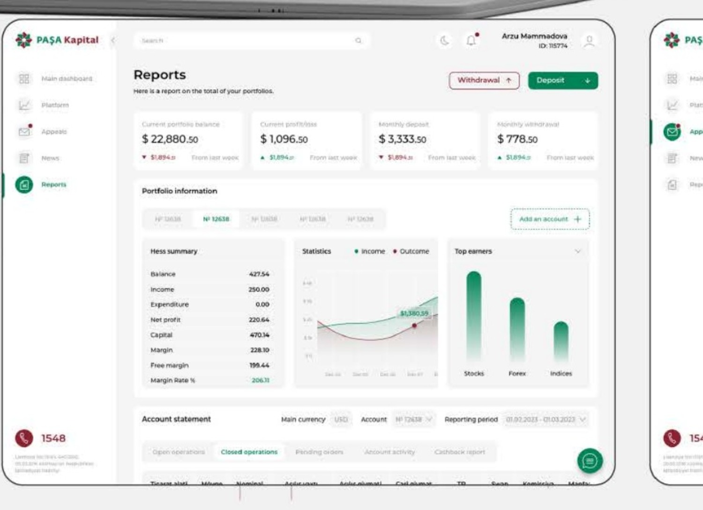
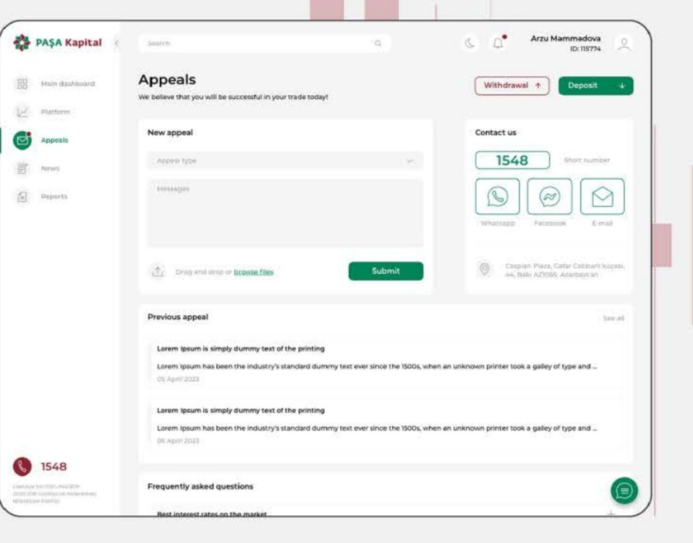

Sürətli baxış
Balans, portfel bölgüsü və əsas statistika ilk ekranda prioritetləşdirildi.
Fintech · UX/UI Design
Portfel məlumatlarını, bazar göstəricilərini, hesabatları və istifadəçi müraciətlərini vahid, aydın interfeysdə birləşdirən treyder paneli.

01 / Ümumi baxış
Maliyyə panelində əsas məqsəd istifadəçinin vacib məlumatı sürətlə görməsi və əsas əməliyyatlara maneəsiz keçməsidir.
İnterfeys portfel balansı, aktiv bölgüsü, gəlir və xərc dinamikası, seçilmiş alətlər və xəbərlər kimi fərqli məlumat qatlarını vahid vizual sistemdə birləşdirir.
Modul kart quruluşu məlumat sıxlığını idarə edir, sabit sol naviqasiya isə panel, bazar, müraciətlər, xəbərlər və hesabatlar arasında keçidi aydın saxlayır.
02 / Yanaşma
Balans, portfel bölgüsü və əsas statistika ilk ekranda prioritetləşdirildi.
Kart əsaslı quruluş müxtəlif məlumat növlərinin ardıcıl təqdimatını təmin edir.
Əsas əməliyyatlar və dəstək kanalları görünən, rahat tapılan mövqelərdə saxlanıldı.
Portfel göstəriciləri, statistik dinamika, seçilmiş aktivlər və əsas əməliyyatlar eyni baxışda təqdim olunur.

Kateqoriya filtrləri, gündəlik bazar xəbərləri və təlim videoları bir məlumat mərkəzində toplanır.

Əsas rəqəmlər, portfel cədvəlləri və qrafiklər pilləli vizual iyerarxiya ilə təşkil edilir.

Yeni müraciət yaratmaq, əvvəlki müraciətlərə baxmaq və əlaqə kanallarına keçmək vahid səhifədə birləşdirilir.

03 / UI System
Yaşıl əsas əməliyyat və müsbət göstəriciləri vurğulayır. Tünd qırmızı ikinci dərəcəli brend aksenti və əlaqə nöqtələri üçün istifadə olunur.
Açıq neytral fon, incə sərhədlər və ölçülü rəng istifadəsi uzunmüddətli ekran baxışında diqqəti məzmun üzərində saxlayır.
04 / Növbəti
Daha çox layihəyə baxUX/UI Design↗